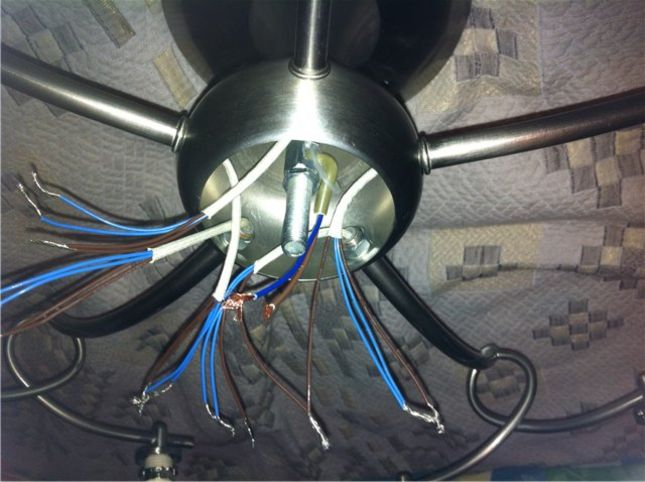
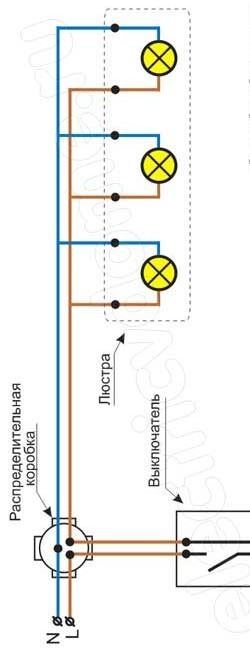

Качественный электромонтаж, Стаж 12 лет. Частный электрик, недорого.
Тел. 8 903 594 95 24 Николай.

Подключение люстры.
Частный электрик.
Люстра – это предмет интерьера в квартире.
Каждая комната имеет в центре рассеиватель света. Правда, иногда из потолка просто торчат провода, к которым присоединен патрон. В народе это именуется «лампочкой Ильича», но достаточно сделать несколько простых манипуляций – и даже из такого, скудного на первый взгляд, предмета можно сделать вполне себе дизайнерскую люстру.
Но вернемся к теме. Подключение люстры собственными руками опасна хотя бы тем, что придется столкнуться с электричеством, главная опасность которого – невидимость. Никогда нельзя по внешнему виду определить, находится провод под напряжением или нет. Нужно всегда иметь в наборе инструментов индикатор, который сможет безошибочно указать, есть ли опасность или же нет.
Сколько стоит подключение люстры.
Цена работы от 500 руб. за штуку.

Для того чтобы просто и безопасно произвести манипуляцию по замене люстры, необходимо будет приобрести несколько вещей.
Во-первых, сама замена.
Сейчас люстры в значительной степени отличаются от того, что было в советское время, как минимум внешним видом и функционалом, как максимум – еще и укреплением. Раньше был крючок, который позволял подвешивать эту самую люстру на специальное крепление в потолке, теперь же его нет.
Во-вторых, инструмент.
Обязательно потребуется отвертка с пластиковой ручкой (благо, сейчас все такие и начти нужный вариант не составит, проблеем), плоскогубцы с изолированными ручками (так же вещь довольно доступная), переходник, строительный или канцелярский нож, перфоратор с бурами, индикатор электричества.
В-третьих, знания замены.
Без элементарного представления о том, как действует электричество, за эту работу лучше не браться вовсе.
Итак, для начала отключаем электричество.
Это можно сделать либо со счетчика в квартире, либо со щитка в парадной. Другое дело, что в щиток не всегда можно попасть, в таком случае придется обращаться в управляющую компанию, а там навяжут услуги собственных электриков. Но вернемся к идеальному варианту.
Ток должен быть отключен либо только в той комнате, где должны производиться работы, либо во всей квартире. Аккуратно снимается старая люстра. Лучше будет заранее снять с нее лампочки и все хрупкие элементы, насколько это возможно. Затем на освободившиеся провода цепляем переходник – пластмассовый изолированный элемент с металлическими вставками внутри.
Заменит проводку для люстры.
Провода из потолка вставляются в два отверстия и надежно затягиваются болтиками. Таким образом, человек может обезопасить себя от случайного попадания рукой или иным токопроводящим элементом на оголенный провод.
Затем берется перфоратор, и просверливаются две дыры, в которые потом будут вставлены пробки. Дырки должны располагаться по обе стороны отверстия в потолке, из которого выходят провода. Делается это для того, чтобы была возможность прикрепить к потолку люстру (как и говорилось, системы крепления были изменены, поэтому вместо крючков теперь осветительные приборы подвешиваются на планку).
Вышеозначенная планка, посредством двух шурупов, крепится к потолку. Но не стоит забывать о болтах, на которые будет крепиться сама люстра – они должны быть на этой планке шляпкой к потолку, ножной вниз. На них и будет крепиться основание люстры. Но перед этим необходимо через переходник соединить провода люстры и провода из потолка. Здесь желательно прибегнуть к помощи второго человека, так как в одного — это занятие будет весьма проблематичным. После соединения проводов через переходник, для пущей надежности его следует закрыть изолентой. На болты крепится люстра. Затем надеваются плафоны, либо иные элементы, предусмотренные конструкцией. Устанавливаются лампочки, и дается напряжение.
Если после замени свет горит – значит, операция прошла успешно.
 Поменять проводку в квартире.
Поменять проводку в квартире. 
Расценки на электропроводку квартир.
Провести электропроводку в новостройке.
Электромонтаж в частном доме.
Электрика в загородном доме.
Сколько стоит замена электропроводки в двухкомнатной квартире?.
Сколько стоит проводка в 3 ком квартире?
Сколько стоит проложить проводку в четырех комнатной квартире?
Сколько стоит сделать внутреннюю проводку?
Стоимость штробление стен.
Электромонтаж двухкомнатной квартиры.
Замена электропроводки в панельном доме.
Электромонтаж проводов в бане.